Rhythm Chains
+ Associated example files
NB: An exercise relating to the material covered in this tutorial can be found on the Exercises page.
The rthm-chain class provides a means of algorithmically
generating two-voice rthm-seq-palettes
and rthm-seq-maps that can be inserted directly into
a slippery-chicken object. It creates the two voices by
automatically assembling sequences of user-defined rhythmic
fragments of either one, two, or three beats.
One of the class's more versatile features is its diversification of the user-defined source material through the automatic insertion of rests and the automatic repetition of what it calls sticking rhythms at certain points in the new material. Both of these features can be influenced by the user through the specification of patterns for the insertion.
The class also offers the user arguments that control the level of activity in the two voices (more notes vs. more rests) by means of envelopes.
+ The "procession" algorithm
The primary sequence-generating function at the core of
the rthm-chain class is the procession
algorithm. This function is used by default to internally determine
the resulting order of the user-defined fragments in the resulting
palettes and maps by extrapolating a list of a specified length from
items of a specified starting list.
Using procession with a list
The procession algorithm is purely deterministic; i.e.,
it incorporates no randomness. It starts with the first three
elements of the initial list and gradually adds successive elements
from that list until all of the elements have been added. The initial
list must therefore have at least four elements.
(procession 73 '(a b c d e)) => (A B A B C A C A A D B C B D B C B C D A D A A E C D C E B D B D E C D C C E A B A E B D B D E A C A A E B D B E C D C D E A B A A E C D C E B D B)
Using procession with an integer
Instead of passing a list to the function as its second argument,
the user can instead pass an integer. In this case, the function will
generate its output from a list of consecutive integers
from 1 to the integer passed as the second argument.
(procession 73 4) => (1 2 1 2 3 1 3 1 1 4 2 3 2 4 2 3 2 3 4 1 3 1 1 4 2 3 2 4 1 3 1 3 4 2 3 2 2 4 1 3 1 4 2 3 2 3 4 1 2 1 1 4 2 3 2 4 1 3 1 3 4 2 3 2 2 4 1 3 1 4 1 3 1)
+ The procession keyword arguments
The procession function has three optional arguments
that contribute to determining the sequence that is generated,
namely :peak, :expt,
and :orders.
:peak
The value passed to the :peak argument has an influence
on the position at which the last item of the original list first
appears in the new list. It takes a floating-point number
between 0.0 and 1.0 as its value,
representing a span of 0% to 100% of the way through the new list,
and it defaults to 0.7.
It is important to note that this value is an approximate value
only. Shorter initial lists will reflect this percentage value less
accurately, and the position of the final item in the resulting list
will also be dependent on other factors, such as the values of
the :orders argument discussed below.
:expt
The value passed to the :expt argument determines the
curve of the interval at which each subsequent element of the
original list is added to the new list. This too is an approximate
argument, and its accuracy will again be influenced by aspects such
as the lengths of the original and resulting lists.
In general, the higher this number is, the steeper the exponential
curve will be. A steeper curve means that subsequent elements of the
original list will be introduced less frequently towards the
beginning of the new list, and then more frequently towards the
end. This argument also takes a floating-point number, and it
defaults to 1.3.
:orders
This argument takes a list of sublists that represent the patterns
by which elements from the original list are introduced to the list
returned by the procession function.
Each consists of all of and only the
numbers 1, 2, and 3. These
numbers represent the three least used elements in the new list at
each pass through the function's list-generating loop. The patterns
are cyclically applied and default to
'((1 2 1 2 3) (1 2 1 1 3) (1 2 1 3)).
The following is an example of the use of
the procession algorithm using all three of these
keywords:
(procession 500 '(a b c d e f g h i j k l m n o p q r s t u v w x y z)
:peak 0.9
:expt 0.7
:orders '((1 3 2 2 3 1) (3 1 1 2 3 3) (1 2 1 3 2 2)))
=> (A C B B C A E A A D E E B D B F D D C F E E F C G A A F G G B C B G C C D H
F F H D H E E G H H G H G I H H A I B B I A J D D I J J F I F J I I C J E E
J C K G G J K K I J I K J J A K B B K A L D D K L L F K F L K K C L H H L C
M E E L M M G L G M L L A M I I M A N B B M N N D M D N M M F N H H N F O J
J N O O K N K O N N L O M M O L P N N O P P C O C P O O E P O O P E P G G I
P P A P A Q P P B Q D D Q B Q F F H Q Q I J I Q J J K R Q Q R K R L L Q R R
M Q M R Q Q N S R R S N S O O R S S P R P S R R C S R R S C T E E S T T G S
G T S S H T S S T H T A A Q T T B T B U T T D U T T U D U F F I U U K L K U
L L M V U U V M V N N U V V O U O V U U P V U U V P W Q Q V W W R V R W V V
S W V V W S W T T V W W C E C W E E G X W W X G X H H W X X I W I X W W J X
U U X J Y V V X Y Y A X A Y X X B Y X X Y B Y D D X Y Y F X F Y X X K Z Y Y
Z K Z M M Y Z Z N Y N Z Y Y O Z P P Z O Z Q Q R Z Z S T S Z T T W Z Y Y Z W
Z C C G Z Z H I H J I I L U R R U L Z A A V Z Z B D B E D D F J G G J F N K
K M N N O P)
+ General attributes of the make-rthm-chain function
A rthm-seq-map and a rthm-seq-palette
The user can create a new object of the rthm-chain
class using the
function make-rthm-chain. The rthm-chain
class is a subclass of the rthm-seq-map class, one of
whose slots is designed to contain
a rthm-seq-palette. The make-rthm-chain
function therefore creates an object that defines
a rthm-seq-map and automatically generates an
accompanying rthm-seq-palette for that map. This palette
can be accessed using (palette rthm-chain-object).
The map itself and the contents of the map's palette
slot can both be passed directly to the :rthm-seq-map
and :rthm-seq-palette arguments of
the make-slippery-chicken function, as described
below.
Internal implementation of the procession algorithm
By default, the make-rthm-chain function will use
the procession algorithm to generate its sequences. The
user must therefore define at least four 1-beat and four 2- and
3-beat rhythm fragments within the corresponding arguments of the
function call (see below). Due to the way these rhythms are processed
and assembled, the rhythm fragments defined must not contain any
individual rhythms that overlap beats.
Keyword arguments
The make-rthm-chain function has 17 optional keyword
arguments. These influence traits such as the activity levels of the
two voices (rests vs. notes), the automatic rest insertion, and the
automatic insertion of "sticking rhythms", as described below.
+ Explaining make-rthm-chain through a simple example
The following simple example demonstrates the argument
requirements, syntax, and usage of the make-rthm-chain
function.
(let* ((rch
(make-rthm-chain
'test-rch 143
'((((e) e) ; 4 in total
(- s (s) (s) s -)
({ 3 (te) - te te - })
((e.) s))
(({ 3 (te) te (te) }) ; what we transition to
({ 3 - te (te) te - })
({ 3 (te) - te te - })
({ 3 (te) (te) te }))
(((q)) ; the second transition
(- s e s -)
({ 3 te (tq) })
(s (e.)))
((- e e -) ; the third transition
(- s s s - (s))
((32) 32 (e.))
((q))))
'((((q q) ; the 2/4 bars: 4 total
((q) q)
((q) q)
((q) (s) e.))
(({ 3 te+te te+te te+te }) ; what we transition to
(q - s e. -)
(q (s) e.)
(q (s) - s e -))
((q - e e -) ; the second transition
((e) q.)
(q - s (e) s -)
((s) q e.)))
((((e.) s (e) e (s) e.) ; the 3/4 bars: 4 total
(- e e - (e) e (q))
(- e. s - - +e e - (q))
(q (e.) s (q)))
(({ 3 (te) (te) te+te te+te } (q)) ; what we transition to
(- e. s - (q) (s) - s e -)
({ 3 te+te te } (q) q)
({ 3 - te te te - } (e) e { 3 (te) (te) te }))
((h.) ; the second transition
(h (q))
(- e e - +q (q))
(s (e.) (h)))))
:players '(fl cl)))
(mini
(progn
(create-psps (palette rch))
(make-slippery-chicken
'+mini+
:ensemble '(((fl (flute :midi-channel 1))
(cl (b-flat-clarinet :midi-channel 2))))
:set-palette '((1 ((e2 a2 cs4 fs4 gs4 a4 b4 e5 gs5 b5 e6))))
:set-map `((1 ,(ml 1 (num-rthm-seqs rch))))
:tempo-map '((1 (q 120)))
:rthm-seq-palette (palette rch)
:rthm-seq-map rch))))
(midi-play mini)
(cmn-display mini)
(write-lp-data-for-all mini))
The first two arguments passed to the make-rthm-chain
function consist of a user-defined ID for the rthm-chain
object being created and an integer that determines the length of the
resulting musical passage, in the form of the number of bars, that
the function is to generate. Remember that these bars will only be
one, two, or three beats long.
The user-defined source rhythm fragments
1-beat fragments
The next two arguments are the lists of source fragments defined by the user. The first list must consist of 1-beat fragments, and there must be at least four of these. These rhythms will be used to create the first voice of the resulting object, and can be thought of as the fast-moving voice.
'((((e) e) ; 4 in total
(- s (s) (s) s -)
({ 3 (te) - te te - })
((e.) s)))
2- and 3-beat fragments
The next argument to the make-rthm-chain function takes
a list of two sublists. The first of these sublists takes at least
four 2-beat rhythmic fragments, and the second takes at least four
3-beat rhythmic fragments.
These fragments will form the second voice of the resulting object, and can be thought of as the slower-moving counterpoint (though the user can, of course, also fill these lists with fast rhythms if preferred). Remember that the rhythms defined here must not overlap beats. If longer durations are desired, the beats should be divided up and connected using ties.
'((((q q) ; the 2/4 bars: 4 total
((q) q)
((q) q)
((q) (s) e.)))
((((e.) s (e) e (s) e.) ; the 3/4 bars: 4 total
(- e e - (e) e (q))
(- e. s - - +e e - (q))
(q (e.) s (q)))))
player IDs
Although the :players argument is technically optional,
the user will generally want to specify the player IDs in the call
to make-rthm-chain for best results. These IDs must be
the same as those specified in the ensemble of
the slippery-chicken object in which
this rthm-chain object will be used.
:players '(fl cl))))
(let* ((mini
(make-slippery-chicken
'+mini+
:ensemble '(((fl (flute :midi-channel 1))
(cl (b-flat-clarinet :midi-channel 2))))
Automatic pitch-seqs
The object created by make-rthm-chain will contain
a rthm-seq-palette with individual rthm-seq
objects, but the pitch-seq-palettes of
those rthm-seqs will be initially empty. A convenient
and quick way of creating pitch-seqs for the pitchless
rhythms in this, or indeed any, rthm-seq-palette is
the create-psps method.
The create-psps method must be called separately,
after the creation of the rthm-seq-palette object for
which it is to create pitch-seqs. It takes one
argument, namely the rthm-seq-palette that it is to
handle, which in this case is accessed using the "palette" slot
accessor, as described above.
The pitch-seqs generated by this method are created
from combinations of a list of default pitch-seqs if not
otherwise specified. The user can, however, modify these lists to
shape the resulting pitch curves to his or her own taste. See the
documentation for
create-psps
for more detail.
(create-psps (palette rch))
Implementing the resulting palette and map
The resulting palette and map can then be passed directly to
the :rthm-seq-palette and :rthm-seq-map
arguments of the make-slippery-chicken function, as seen
here:
:rthm-seq-palette (palette rch)
:rthm-seq-map rch)))
The first system of the piece created by the above code will look like this in LilyPond output:
| 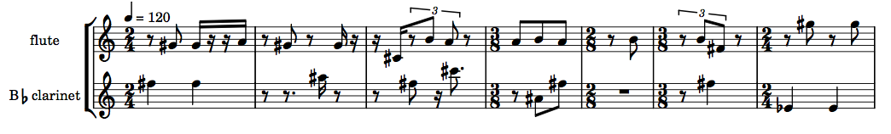 |
+ Using fibonacci-transitions instead of procession
The user also has the option of using the
fibonacci-transitions algorithm instead of the
procession algorithm to generate the resulting sequences. In
order for the make-rthm-chain function to know to apply the
fibonacci-transitions algorithm instead, the user must set
one or both of the keyword arguments :1-beat-fibonacci (the
1-beat fragments) and :slow-fibonacci (the 2- and 3-beat
fragments) to T.
:1-beat-fibonacci t
:slow-fibonacci t
The rest remains the same
All other aspects of usage in
conjunction with the fibonacci-transition function remain
the same, e.g.:
(let* ((rch
(make-rthm-chain
'test-rch 143
'((((e) e) ; 4 in total
(- s (s) (s) s -)
({ 3 (te) - te te - })
((e.) s)))
'((((q q) ; the 2/4 bars: 4 total
((q) q)
((q) q)
((q) (s) e.)))
((((e.) s (e) e (s) e.) ; the 3/4 bars: 4 total
(- e e - (e) e (q))
(- e. s - - +e e - (q))
(q (e.) s (q)))))
:players '(fl cl)
:1-beat-fibonacci t
:slow-fibonacci t)))
(create-psps (palette rch))
(let* ((mini
(make-slippery-chicken
'+mini+
:ensemble '(((fl (flute :midi-channel 1))
(cl (b-flat-clarinet :midi-channel 2))))
:set-palette '((1 ((e2 a2 cs4 fs4 gs4 a4 b4 e5 gs5 b5 e6))))
:set-map `((1 ,(ml 1 (num-rthm-seqs rch))))
:tempo-map '((1 (q 120)))
:rthm-seq-palette (palette rch)
:rthm-seq-map rch)))
(midi-play mini)
(cmn-display mini)
(write-lp-data-for-all mini)))
The following is the LilyPond output of the same first system as the
first example, this time using fibonacci-transitions for
both the 1-beat and the slow voices:
| 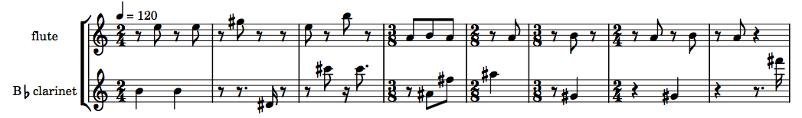 |
+ An extra level of fibonacci-transitions
The make-rthm-chain function has an additional feature
that allows the user to specify a further level of
fibonacci-transitioning in the musical data that it generates. By
specifying one or more additional sublists of fragments, the function
will automatically perform a transition from the elements of the
initial sets to the elements of each consecutive set.
This approach requires that each subsequent sublist have the same
number of elements. It also requires that both the 2-beat and 3-beat
fragments defined have the same number of additional sublists (the
number of 1-beat sublists can differ from that of the 2- and 3-beat
sublists). This approach can be used with both
the procession and
the fibonacci-transitions algorithms as the initial
sequence generators.
(let* ((rch
(make-rthm-chain
'test-rch 143
'((((e) e) ; 4 in total
(- s (s) (s) s -)
({ 3 (te) - te te - })
((e.) s))
(({ 3 (te) te (te) }) ; what we transition to
({ 3 - te (te) te - })
({ 3 (te) - te te - })
({ 3 (te) (te) te }))
(((q)) ; the second transition
(- s e s -)
({ 3 te (tq) })
(s (e.)))
((- e e -) ; the third transition
(- s s s - (s))
((32) 32 (e.))
((q))))
'((((q q) ; the 2/4 bars: 4 total
((q) q)
((q) q)
((q) (s) e.))
(({ 3 te+te te+te te+te }) ; what we transition to
(q - s e. -)
(q (s) e.)
(q (s) - s e -))
((q - e e -) ; the second transition
((e) q.)
(q - s (e) s -)
((s) q e.)))
((((e.) s (e) e (s) e.) ; the 3/4 bars: 4 total
(- e e - (e) e (q))
(- e. s - - +e e - (q))
(q (e.) s (q)))
(({ 3 (te) (te) te+te te+te } (q)) ; what we transition to
(- e. s - (q) (s) - s e -)
({ 3 te+te te } (q) q)
({ 3 - te te te - } (e) e { 3 (te) (te) te }))
((h.) ; the second transition
(h (q))
(- e e - +q (q))
(s (e.) (h)))))
:players '(fl cl))))
(create-psps (palette rch))
(let* ((mini
(make-slippery-chicken
'+mini+
:ensemble '(((fl (flute :midi-channel 1))
(cl (b-flat-clarinet :midi-channel 2))))
:set-palette '((1 ((e2 a2 cs4 fs4 gs4 a4 b4 e5 gs5 b5 e6))))
:set-map `((1 ,(ml 1 (num-rthm-seqs rch))))
:tempo-map '((1 (q 120)))
:rthm-seq-palette (palette rch)
:rthm-seq-map rch)))
(midi-play mini)
(cmn-display mini)
(write-lp-data-for-all mini)))
The following two snippets show the difference in bars 23 to 38 between the first procession example, and the code above.
| 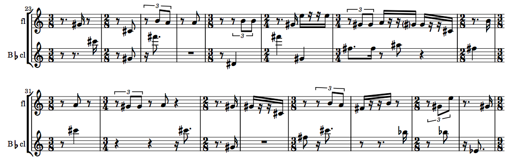 |
| 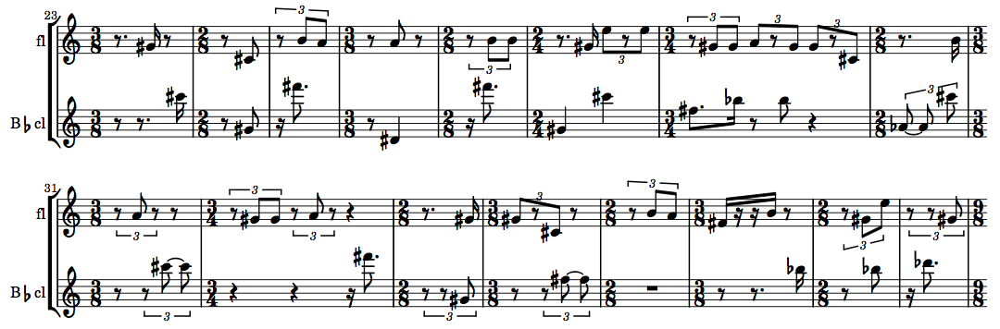 |
+ Some useful post-generation editing methods
Because of the fragmented nature of the source material for this featured algorithm, the resulting music may often be the point of departure for slightly more extensive use of post-generation editing methods. For example, the user may want to consolidate tied notes or multiple consecutive rests, add ties between existing notes or extend short notes over subsequent rests, or consolidate the very short bars into longer ones for easier reading. A number of methods are available to assist the user to these ends.
+ consolidate-notes
The consolidate-notes method combines any tied notes of
a specified bar into one longer duration. This is a complex algorithm
and is not fool-proof; for example, it does not split new durations
evenly at the beats of the bar. But it can still be a very valuable
aid in assembling a more legible score.
This method can be particularly useful
with rthm-chain objects that were created from 2- and
3-beat fragments containing ties between beats, as can be seen in the
following before-and-after snippets of the same passage.
| 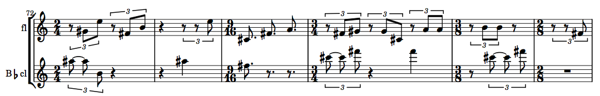 |
| 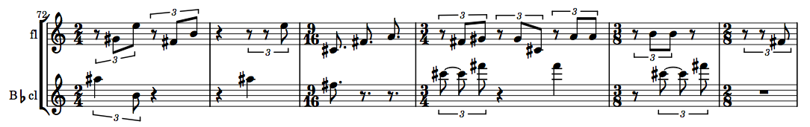 |
The consolidate-notes method takes a
single rthm-seq-bar object as its only argument. When
applied to an existing slippery-chicken object, the bar
object is best specified using the get-bar method,
which takes the slippery-chicken object, the bar
number, and the player ID as its own arguments, as can be seen
here:
(consolidate-notes (get-bar mini 72 'cl))
This method is often automatically called from within other
methods. In such cases, it can usually be disabled by setting
the :consolidate-notes keyword argument
to NIL, if the user so desires.
+ consolidate-rests-max
This method performs a similar consolidation routine to that
of consolidate-notes, but applied to rests instead. As
with the note-consolidating algorithm, this algorithm too is quite
complex and not fool-proof, with the similar caveat that the
resulting, longer rests are not split evenly at beats.
The result of calling this method on bar 2 of the flute part in the
second rthm-chain object created above can be seen in
these before-and-after snippets of the score:
| 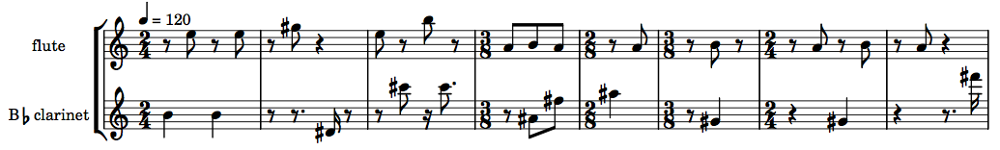 |
As with the consolidate-notes method, this method takes
a single rthm-seq-bar object as its only argument. This
too can best be retrieved using the same get-bar syntax
spelled out above:
(consolidate-rests-max (get-bar mini 2 'fl))
This method too is built-in to many other methods, and can
generally be disabled in those methods by specifying
the :consolidate-rests keyword with the
value NIL.
+ tie-over-notes
One of the rthm-chain class's primary features, the
automatic insertion of rests of various durations, may result in
music that is initially a little pointillistic. One option
for smoothing out passages of jagged short notes is the use of the
tie-over-rests and related methods.
The tie-over-rests method changes all consecutive rests
immediately following a specified note into notes of the same pitch
as the note specified and ties them all together. It takes as its
arguments the slippery-chicken object to be modified,
the number of the bar in which the tie is to begin, the number of the
note from which the tie is to begin, and the player ID.
(tie-over-rests mini 72 4 'fl)
This brief before-and-after example demonstrates the effect of
using tie-over-rests on some of the notes from the
original object.
| 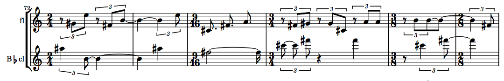 |
By default, the tie-over-rests method also applies
the consolidate-notes algorithm automatically to the
bars affected. This behavior can be disabled by setting the
method's :consolidate-notes keyword argument
to NIL, e.g.:
(tie-over-rests mini 72 4 'fl :consolidate-notes nil)
It is important to note that this method changes the number
of notes (non-rest event objects) in the
specified bar and potentially any subsequent bars that begin with
rests. Because of this, it may be necessary, when applying the method
several times in the same player of a piece, to apply it
in backwards order and set
the :consolidate-notes argument
to NIL.
It is also important to note that this method only affects
the printable output. In order for any new ties to also be
reflected in the MIDI output, the user must subsequently call
the handle-ties method for the
entire slippery-chicken object.
(handle-ties mini)
+ map-over-bars
Many of the post-generation editing methods only apply to one bar at
a time. If the user would like to apply such a method to a longer
passage of consecutive measures, the
method map-over-bars can be very helpful.
This method takes as its arguments the slippery-chicken
object to be affected, the start bar, end bar, and player ID (or list
of IDs) for the part(s) to be affected, the method (or function) that
is to be applied, and any additional optional arguments which that
method or function may possess.
(map-over-bars mini 72 77 'cl #'consolidate-notes)
The result of this call to map-over-bars with the same
passage used in the consolidate-notes example above can
be seen in the score snippets here:
| 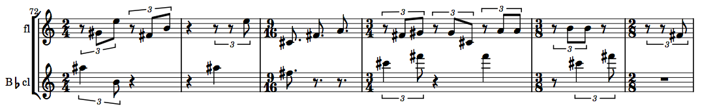 |
+ re-bar
The re-bar method is handy for redistributing
musical material consisting of several short bars into fewer, longer
bars. It is discussed in more detail in the tutorial
for Second Law and
Intraphrasal-Looping, but will be reviewed briefly here as
well.
The re-bar method will only combine shorter bars into
longer ones; it will not divide longer bars into shorter bars in
order to conform to a strict time signature. In its simplest form, it
takes as its arguments the slippery-chicken object to be
re-barred, and a time signature passed to
the min-time-sig keyword argument, which serves as
the target time signature of for the re-barring process.
(re-bar mini :min-time-sig '(4 4))
It is important to note that because the method functions by merely combining consecutive bars, it will not always be possible to produce bars of the exact time signature given here (depending on the time signatures of the original bars), and the user should consider the value passed to this argument to be a generally descriptive target rather than a precise value.
The following two score snippets provide a before-and-after view of
applying the re-bar method to the
first rthm-chain object above.
| 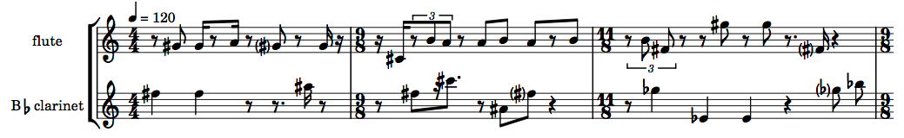 |
+ add-voice
The final rthm-chain method to be discussed here is
add-voice. This method allows the user to
automatically generate a new voice for the same original
two-voice rthm-seq-palette and rthm-seq-map
using the same fragment material specified in the initial call to
make-rthm-chain.
When calling add-voice, the user must specify
the rthm-chain object that is to be extended, the ID of
the existing player from whose part the new voice is to be derived
(coupled with the section ID of the rthm-chain
object's rthm-seq-map, which defaults
to 1), and the player ID for the new part, e.g.:
(add-voice rch '(1 fl) 'ob)
The add-voice method must be called before
create-psps is called, if the user intends to
automatically generate pitch-seq-palettes for all
parts, e.g.:
(add-voice rch '(1 fl) 'ob) (create-psps (palette rch))
If the rthm-chain object generated is to be used
immediately in a call to make-slippery-chicken (as will
usually be the case), the :ensemble defined for that
function must also include a player with the same ID specified in
the call to add-voice, e.g.:
:ensemble '(((fl (flute :midi-channel 1))
(ob (oboe :midi-channel 2))
(cl (b-flat-clarinet :midi-channel 3))))
The method generates its new part from the original
part by first analyzing the time signatures of
the rthm-seq objects of that source part. It collects
the sequences of that first part into groups of same meter in the
order they occur, and creates a new voice from
different rthm-seqs of identical meter to the source
voice.
The following is a small amount of source code and an accompanying score fragment of the music generated by that code produced by LilyPond:
(let* ((rch
(make-rthm-chain
'test-rch 173
'((((e) e) ; 4 in total
(- s (s) (s) s -)
({ 3 (te) - te te - })
((e.) s)))
'((((q q) ; the 2/4 bars: 4 total
((q) q)
((q) q)
((q) (s) e.)))
((((e.) s (e) e (s) e.) ; the 3/4 bars: 4 total
(- e e - (e) e (q))
(- e. s - - +e e - (q))
(q (e.) s (q)))))
:players '(fl cl))))
(add-voice rch '(1 fl) 'ob)
(create-psps (palette rch))
(let* ((mini
(make-slippery-chicken
'+mini+
:ensemble '(((fl (flute :midi-channel 1))
(ob (oboe :midi-channel 2))
(cl (b-flat-clarinet :midi-channel 3))))
:set-limits-high '((fl (0 e6 100 e6))
(ob (0 b5 100 b5))
(cl (0 d5 100 d5)))
:set-limits-low '((fl (0 gs5 100 gs5))
(ob (0 a4 100 a4))
(cl (0 e3 100 e3)))
:tempo-map '((1 (q 72)))
:set-palette '((1 ((cs4 fs4 gs4 a4 b4 e5 gs5 b5 e6))))
:set-map `((1 ,(ml 1 (num-rthm-seqs rch))))
:rthm-seq-palette (palette rch)
:rthm-seq-map rch)))
(midi-play mini)
(cmn-display mini)
(write-lp-data-for-all mini)))
| 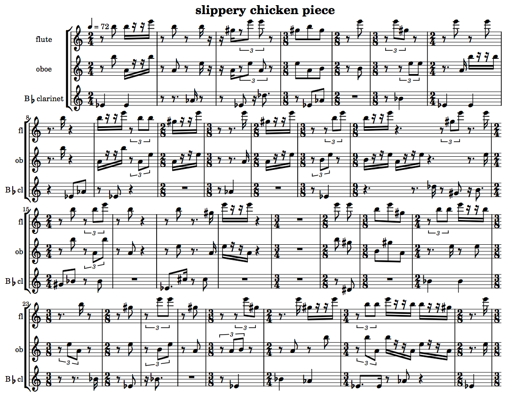 |